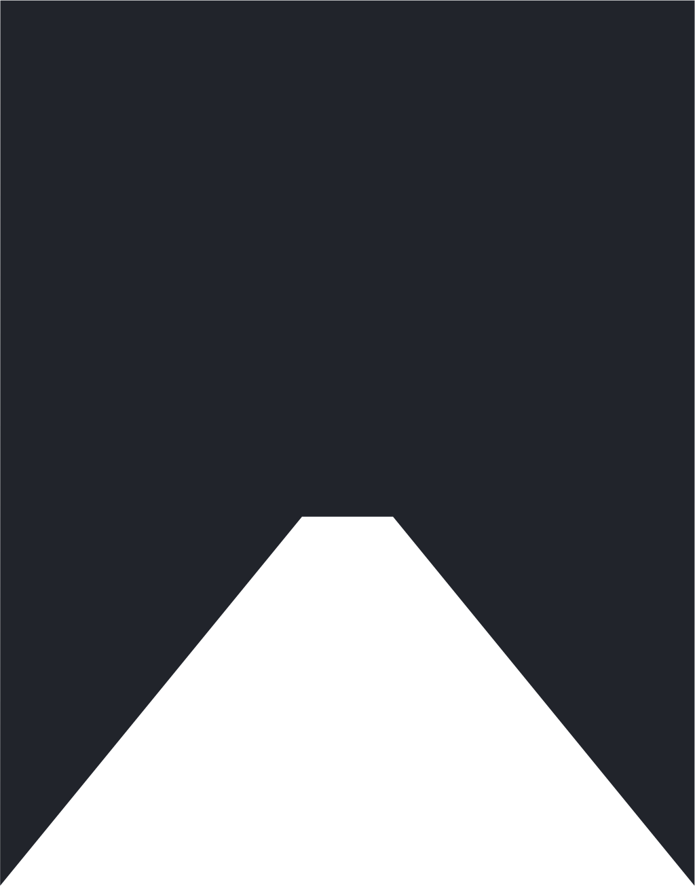

Ближайший показ
Косово: Долина
Дэн Рид / 1999
Уникальный фильм о войне в Косово, снятый в 1999 г. в самом эпицентре зарождающегося конфликта, долине Дреница, на пике кровавых событий. Персонажи фильма показаны с такой откровенностью, которую нечасто встретишь в подобных документальных фильмах, причем лицо войны показано с обеих сторон конфликта.
7 марта
19:00
505 ауд.
Хитровский переулок, 2/8с5
opia.club.hse@gmail.com